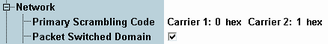

Miscellaneous Network Settings
This section describes the highest level of the network settings section.

Miscellaneous network settings
Set index i for calculation of the primary scrambling code number by multiplication with 16.
Some channels can be scrambled using the primary or a secondary scrambling code. The secondary scrambling code is defined individually for each of these channels, see "Physical Channel Downlink Settings".
If a multi-carrier scenario is active, individual values can be set per carrier.
For background information, see "Scrambling Codes".
Remote command:Selects whether the emulated UTRAN cell supports packet switched connections. Circuit switched connections are always supported.
Remote command: